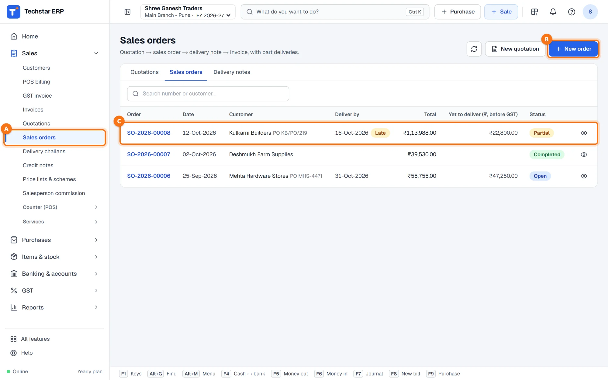
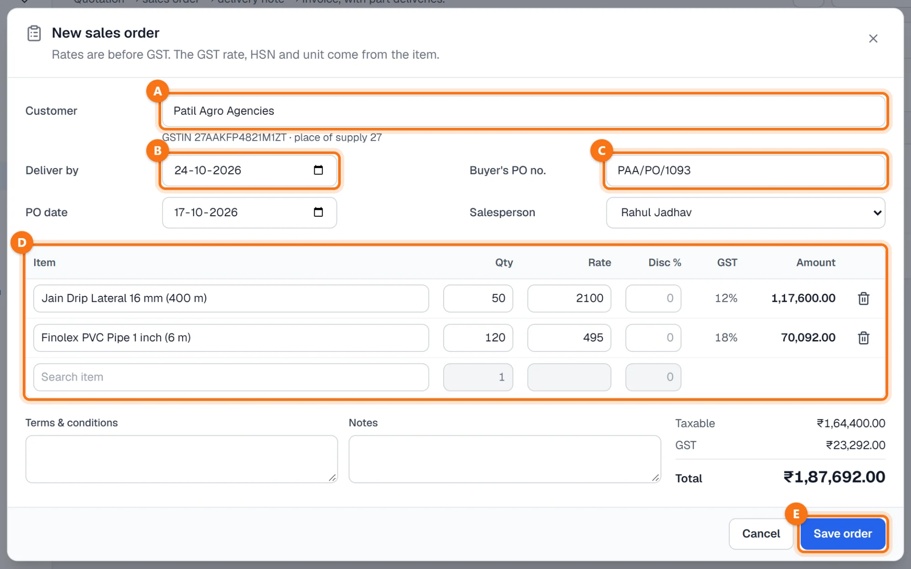
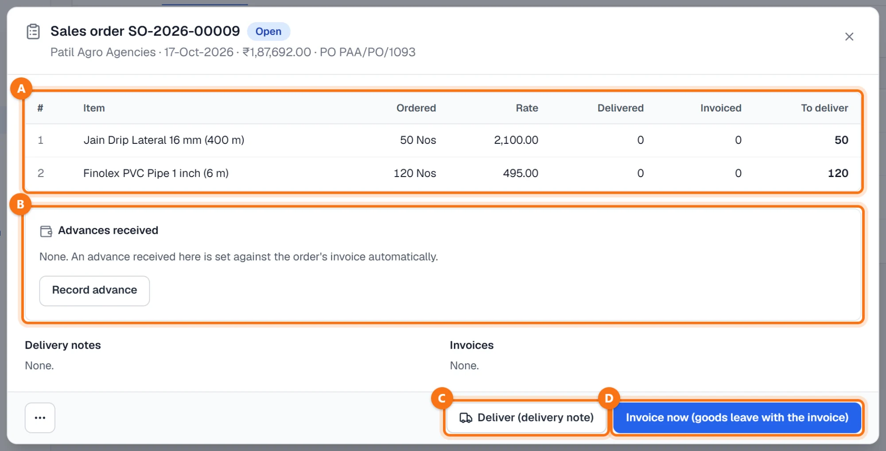
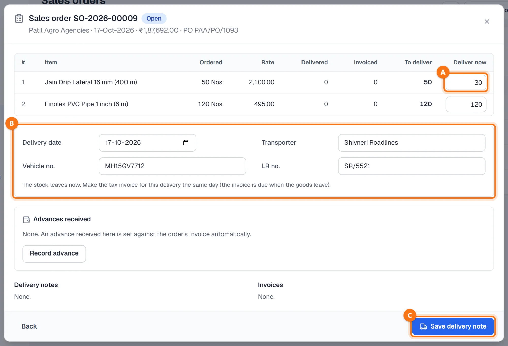
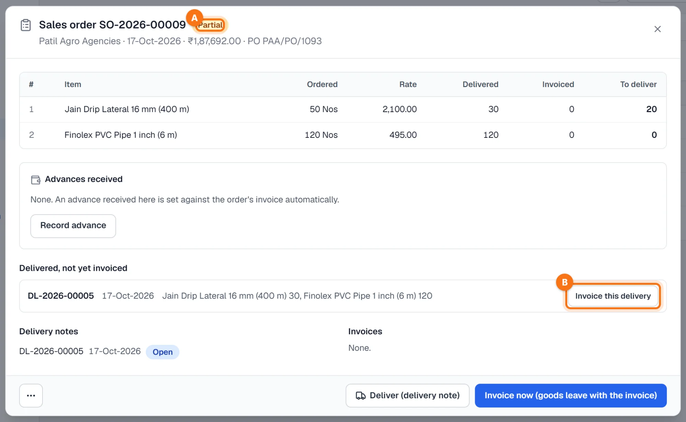
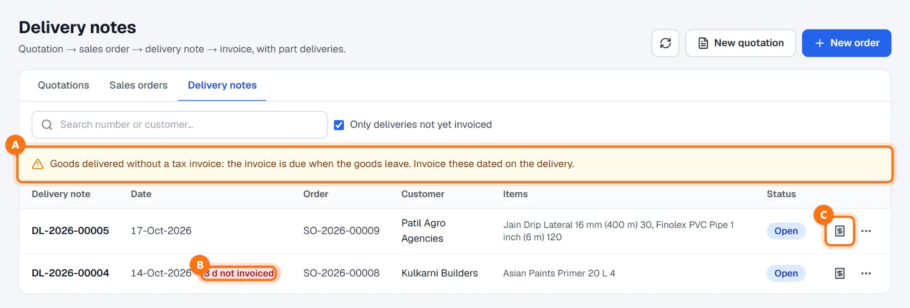
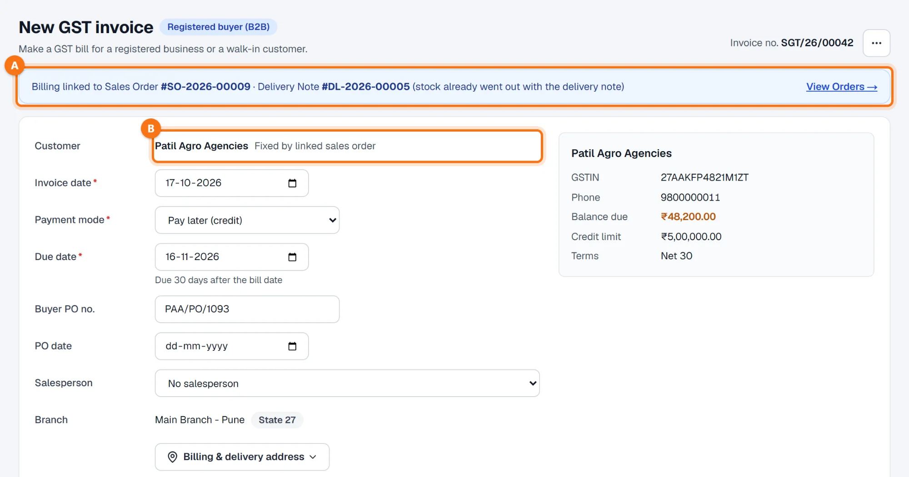

Techstar ERP is also in Hindi and Marathi. Click the round button with your initial (top right) → Language → हिन्दी or मराठी. The menu changes to that language; invoices and other legal documents print as usual. The screenshots in this guide use the English menu.
Before you start
The customer must be in your customer list and the items in the item master. An order can also come from an accepted quotation — see How to make a quotation.
Sales orders and deliveries are made by a supervisor or the accounts team; counter staff (cashier and billing operator logins) cannot make them. An order itself posts nothing: stock moves with the delivery note, and the sale is booked with the invoice.
Open Sales → Sales orders
In the left menu click Sales → Sales orders A. Each order shows its number, date, customer (with the buyer's PO), Deliver by, total, Yet to deliver (value before GST) and status — Open, Partial, Completed, Closed or Cancelled. A Late badge C means the deliver-by date has passed.
Click New order B to book an order.

Book a new order
- Customer A: search by name, mobile or GSTIN and press Enter. The GSTIN and place of supply are shown under it.
- Deliver by B: the promised delivery date.
- Buyer's PO no. C and PO date: the customer's purchase order; it is carried over to the invoice. Salesperson is optional.
- Items D: item, Qty, Rate (before GST) and Disc %. The GST rate, HSN and unit come from the item; the customer's price list and running schemes give the default rate and discount.
- Terms & conditions and Notes are optional. The taxable value, GST and total are shown on the right.
Click Save order E. The order gets its number (for example SO-2026-00009) and opens.

The order
The order window lists each line with Ordered, Rate, Delivered, Invoiced and To deliver A.
- Advances received B: Record advance takes an advance from the customer (amount, date, cash or bank, mode, reference). It is set against the order's invoice automatically.
- Deliver (delivery note) C: send the goods now and invoice them afterwards.
- Invoice now (goods leave with the invoice) D: no separate delivery note; the GST invoice opens with the pending quantities.
- The ⋯ button: Close order (what is still to be delivered is dropped; you can reopen the order later) or Cancel order (only while nothing has been delivered).

Deliver with a delivery note
Click Deliver (delivery note). A Deliver now column A appears, filled with what is still to deliver — change it to send only part of the order.
Below B: Delivery date, Transporter, Vehicle no. and LR no.. The note on screen reminds you that the stock leaves now and the tax invoice for this delivery should be made the same day. Click Save delivery note C.

After the delivery
The delivery note gets its number (for example DL-2026-00005) and the stock goes out. The order now shows the delivered quantities and becomes Partial A while something is still to deliver.
Delivered, not yet invoiced lists the delivery notes still waiting for their invoice. Click Invoice this delivery B.

Deliveries waiting for an invoice
The Delivery notes tab shows every delivery; tick Only deliveries not yet invoiced to see the pending ones. When goods have left without a tax invoice, a yellow note A says so, and each late delivery carries a red badge such as 3 d not invoiced B.
The invoice icon C opens the invoice for that delivery. An open delivery note can also be cancelled from its ⋯ menu: the goods come back into stock and the order is open for them again.

Invoice the delivery
The GST invoice opens with a blue line A: Billing linked to Sales Order … · Delivery Note … (stock already went out with the delivery note). The customer is fixed by the order B, the buyer's PO comes along, the lines are the delivered quantities and the invoice date is the delivery date.
Check the rest and click Save bill, as on any invoice — see How to make a sales invoice. The invoice cannot be dated before the delivery note, and a line cannot take more than is left on the delivery note or the order.

Common questions
Can I deliver an order in several parts?
When should I use Invoice now instead of a delivery note?
The customer cancelled the rest of the order. What do I do?
What if I cancel an invoice made from an order?
Is a delivery note the same as a delivery challan?
More guides
Screenshots are from Techstar ERP with a demo company (Shree Ganesh Traders, Pune). All names, GSTINs, amounts and document numbers are sample data.